Alarms and Events configuration dialog showing severity levels 1-4 (Critical, High, Medium, Low) with Shelving and Historizing options, alarm mode icons (Inhibited, Silenced, Shelved), and event types (System, Application, User)
Module 5 — Alarms and Events Visualization | Pages 351–362
27. In the Alarm Client, select a row, and then right-click and select Ack Selected.
Ack Comment appears.
28. In Comment, enter ticket issued, and then click OK.
The selected alarm no longer appears in the list.
29. In the Alarm Client, right-click and select Ack Others | Ack All.
30. In Comment, enter ticket issued, and then click OK.
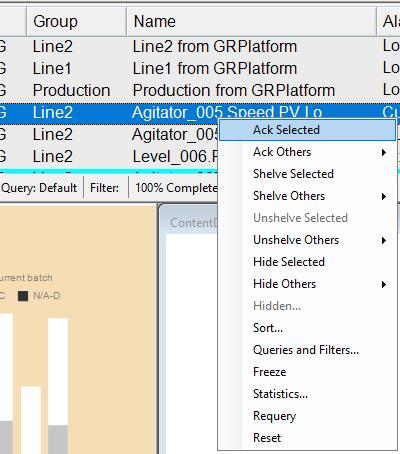
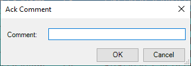
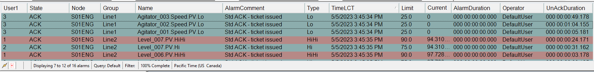
Use the Customized Filters in Runtime
Now, you will use the context menu in the Alarm Client to select a filter you created earlier. You will
explore more of the context menu items in a later lab, when security is enabled.
31. Right-click the AlarmLiveDisplay graphic and select Queries and Filters.
Query and Filter Favorites appears.
32. In Filters, check Line1.
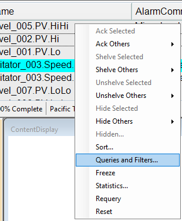
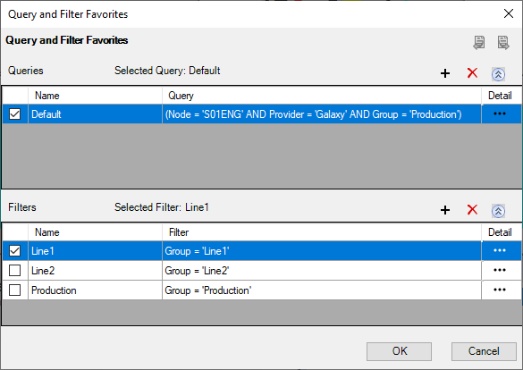
33. Click OK and verify the Line1 alarm information.
34. Try additional filters.
35. Click Development! to return to WindowMaker.
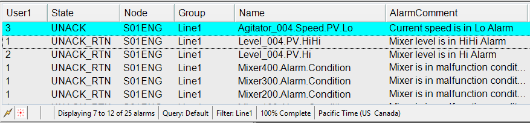
Introduction
In this lab, you will create an alarm display that is tied to the alarms from a specific mixer. You will
embed a new alarm display symbol in the object itself and use scripting to build the alarm queries
needed for the objects contained in the mixer. You will also add a button in the mixer display to
show the alarm popup using Show Symbol animation.
This lab assumes that the WinPlatform hosting the alarmed objects is configured as the alarm
provider for such objects.
Objectives
Upon completion of this lab, you will be able to:
Use scripting to dynamically change the Alarm Client’s AlarmQuery property to display
context-aware alarms
Use the MyPlatform. relative reference in an expression
Show a symbol using the Me. relative reference
Create a Context-Aware Alarm Display
In the following steps, you will create a symbol that includes the Alarm Client. Then you will use
scripting to build an alarm query that will be used to dynamically modify the Alarm Client’s
AlarmQuery property. Finally, you will add a button to the mixer display to open an alarm popup
window using the Show Symbol animation.
1.
In the IDE, on the Templates tab, in the Training\Project template toolset, open the $Mixer
template for editing.
2.
Add a symbol named AlarmPopup, and then open it for editing.
3.
In Tools, click Alarm Client and place it on the canvas.
4.
On the Properties tab, configure properties as follows:
The canvas should look as follows:
Name:
AlarmClient
Width:
800
Height:
400
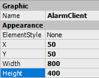
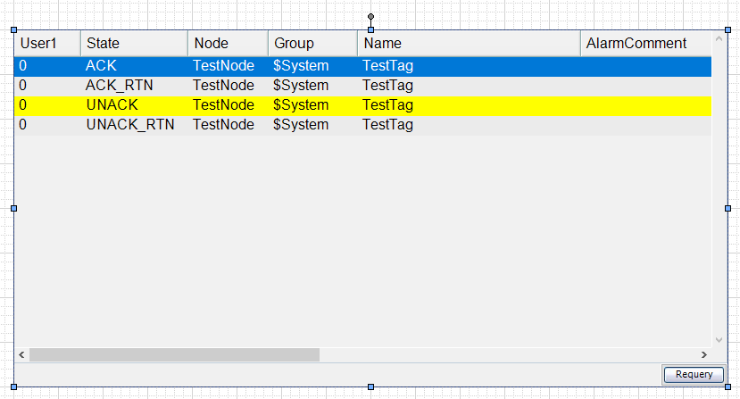
5.
Right-click the canvas and select Custom Properties.
6.
Add a custom property named NodeName and configure it as follows:
7.
Click OK to close Edit Custom Properties.
8.
Right-click the canvas and select Scripts.
9.
In Edit Scripts, click Add Script.
Data Type:
String
Default Value:
‘Expression or Reference’ mode:
MyPlatform.NodeName
Visibility:
Private
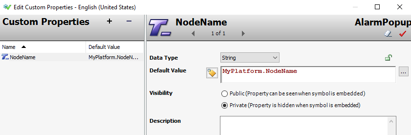
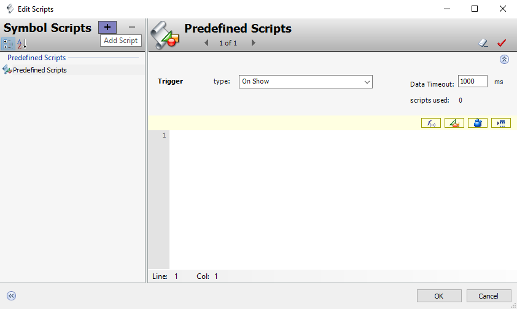
10. Name the script UpdateQuery and configure it as follows:
:
11. In the script body, enter the following.
Note:
You may use the script in C:\Training\Lab 15 - Creating an Alarm Popup Symbol.
'Build alarm query prefix.
dim prefix as string;
prefix = "\\" + NodeName + "\Galaxy!" + Me.Area + "!";
'Build alarm query.
dim almQry as string;
almQry = prefix + Me.Tagname + ".* ";
almQry = almQry + prefix + Me.Agitator.Tagname + ".* ";
almQry = almQry + prefix + Me.Inlet1.Tagname + ".* ";
almQry = almQry + prefix + Me.Inlet2.Tagname + ".* ";
almQry = almQry + prefix + Me.Outlet.Tagname + ".* ";
almQry = almQry + prefix + Me.Temperature.Tagname + ".* ";
almQry = almQry + prefix + Me.Level.Tagname + ".* ";
'Update alarm client with alarm query.
AlarmClient.AlarmQuery = almQry;
12. Click OK to close Edit Scripts.
13. Save and close the graphic.
Expression:
NodeName
Trigger:
DataChange
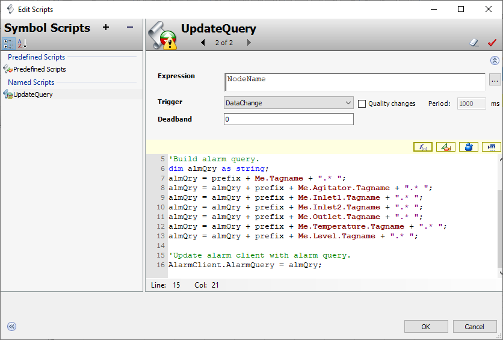
14. In the Object Editor for the $Mixer template, in Content, double-click
MixingProcess_Detailed to open it for editing.
15. On the canvas, draw a button, enter Alarms, and then press Enter.
16. Place the button to the right of the Tank and change its ElementStyle to Intensity2.
Leave some space to the right of the Alarms button for placing another button in a later lab.
17. Double-click the Alarms button to open Edit Animations.
18. Add a Show Symbol animation.
19. In Reference, enter Me.AlarmPopup.
20. Click OK to close Edit Animations.
21. Save and close the graphic.
22. Save and close and check in the $Mixer template.
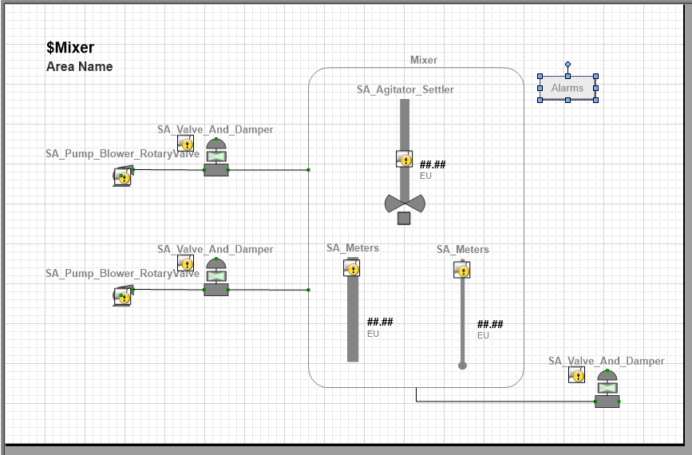
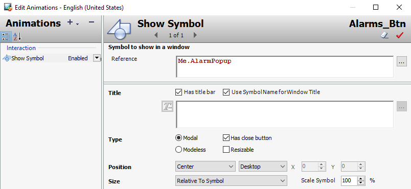
Test in Runtime
Now, you will test if the Alarms button pops up the alarm display.
23. In WindowMaker, click Runtime.
24. In the ContentDisplay window, click the Alarms button to show the alarm display.
25. Verify that the displayed alarm information is only for Mixer100.
26. Close the alarm popup window.
27. Use the Select Mixer drop-down list to select another mixer, and then click the Alarms button.
28. Verify that the displayed alarm information is only for the mixer you selected.
29. Close the alarm popup window.
30. Click Development! to return to WindowMaker.
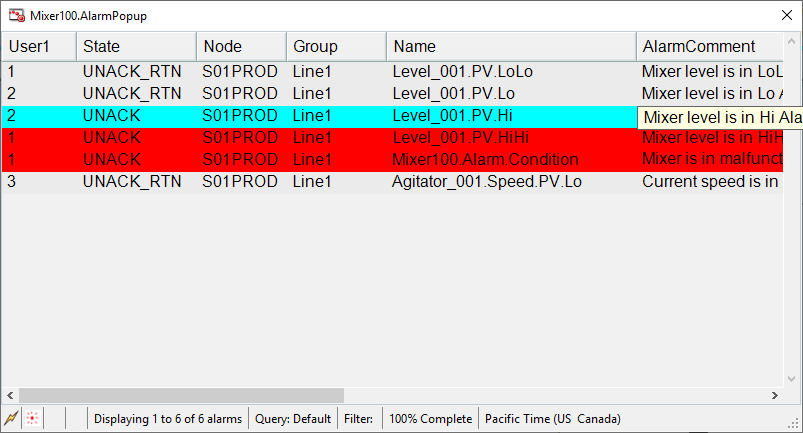
Introduction
Alarm and event data can be logged with Historian to history blocks or to the A2ALMDB database.
History blocks are files in a proprietary format that store plant data and alarm and event data.
A2ALMDB is a SQL Server database that stores alarm and event data generated by Application
Server. Alarm and event data can also be logged with the legacy Alarm DB Logger application,
which stores alarms and events in a SQL Server database, which is created with a default name of
WWALMDB.
To log alarm and event data from Automation objects, you need to enable the host AppEngine with
storage to historian and specify a Historian server. Additionally, in the Alarms and events dialog
box, you can enable historizing alarms by alarm severity and historizing events by type.
Historizing Alarms and Events Using Historian
Alarms, Events, and Process Data share the same Historian configuration such as Historian node,
Store and Forward path, and so on. Enable storage to historian must be enabled to historize
process data and events. Similar to process data, Alarm and Event historization also supports
Store and Forward, Application Engine fail-over, and dual Historians.
This section explains how to use the Alarm Client control in your InTouch for System Platform
application to visualize historical alarms and events.
Selecting Alarm and Event Categories to Historize
Choose the alarm and event categories that you would like to historize by using the Alarms and
events dialog box. To open this dialog box, on the Galaxy menu, click Configure | Alarms and
Events Configuration.
Checking the Historize check box against each category determines whether or not those
categories will be historized. Modifying the Historize option does not require a redeployment.
Setting Up the Engine
At the Engine level, check the Enable storage to historian and Enable Tag Hierarchy check boxes.
Then, in the Historian field, enter the Primary Historian node.
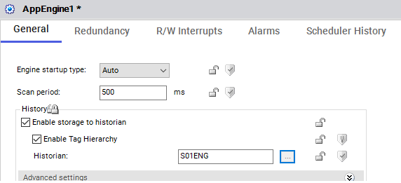
Review the sections above for the main topics, step-by-step procedures, and important configuration details.
This is part of the InTouch HMI layer, which integrates with Application Server's Galaxy for a complete visualization solution.
Module 5 — Alarms and Events Visualization. AVEVA InTouch for System Platform 2023 Training.
Next: Lesson L28 — Lab 15 – Alarm Popup Symbol